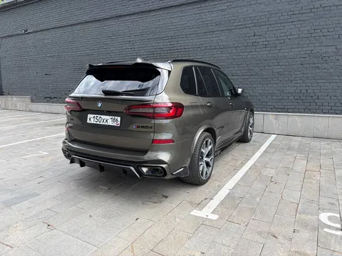
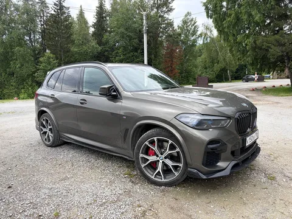
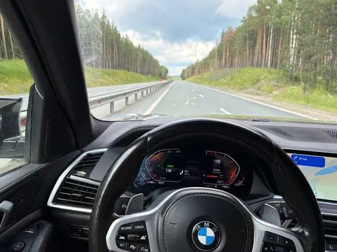
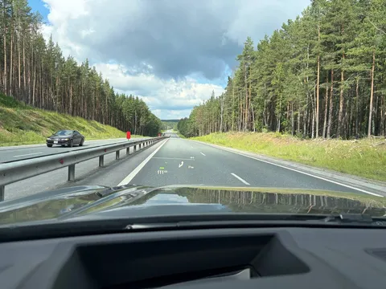

За эту неделю мы прошли пешком 60 километров по 4 классным уральским городам, двум удивительным природным достопримечательностям и одному потрясному музею. А еще мы между этими локациями проехали 1700 километров на прокатной машине, и это вполне можно считать поводом рассказать о ней.
BMW X5 30d G05. Начну с выводов. Это отличная машина, но я ждал большего. Даже так скажу - перед поездкой я опасался, что ха-пятый мне понравится настолько, что я захочу на него пересесть с рэнджа. Нет, не захочу. И да, я хорошо понимаю, что это очень разные машины, но их так часто считают конкурентами, что и я невольно сравниваю икса с рэнджом.
В целом - икс прекрасен в своей универсальности и сбалансированности. В меру большой, но не огромный. Тяговитый, но не нервный. Высокий, но не валкий. Очень эргономичный и продуманный - после 4-5 часов за рулем усталости почти нет. Все сделано по уму - чем не могут похвастаться китайцы - bmw за 100 лет научились делать почти идеальные автомобили. У платформы clar (g-серия) в общем-то нет изъянов, это просто очень хорошие автомобили. Хотя может от того они утратили немножко азарта и индивидуальности и стали скучноваты?
Из минусов (субъективное мнение применительно к моему конкретному путешествию). Жесткая подвеска. Пока дороги хорошие - все супер. Но где вы такие видели, когда вы путешествуете? (Не «шагаете 20 по платке», а ездите по 4 субъектам необъятной, не гнушаясь грунтовок.) Еще тормоза не понравились - тормозное усилие не линейно зависит от усилия на педали, приходится «дотормаживать», что не лучшим образом сказывается на плавности хода.
Зато (вполне ожидаемый размен) рулежка - мое почтение. Машина следует за рулем с феноменальной точностью и охотой, не свойственной кроссоверу массой за 2 тонны. Тут снимаю шляпу, в которой баварские фокусники явно смогли бы спрятать кролика килограммов на 500.
Не могу не отметить отличный трехлитровый дизелек. Ровная тяга с любых оборотов безо всякой истерики, мощности ровно сколько нужно всегда, легко управляется без нервозности и рывков. И вполне экономичен (8.5л/100км в нашем смешанном случае) с запасом хода 800-900км, а это в наше непростое время немаловажно.
Понравилась электроника (относительно рэнджа). Очень грамотно настроен адаптивный круиз - держит дистанцию плавнее, чем ногой. И шикарная проекция, показывающая в том числе навигационные подсказки из я.карт, подключенных по беспроводному карплею! Впрочем, немудрено, платформа clar довольно свежая (архитектура электронных систем тоже заложена в платформу и плохо поддается апгрейду при рестайлингах, а дорест 4го рэнджа вышел лет на 6 раньше клэра).
Итого, если кто-то сомневался, Х5 (да и почти любой современный взрослый bmw) - отличный автомобиль, можно смело брать и кайфовать. В моем гараже, быть может, тоже окажется что-то из g-кузовов, но пока там другая обновочка, о которой скоро расскажу.
P.S. На последнем фото - иллюстрация к утверждению «Можно вывезти мужика с Урала, но не получится вывести Урал из мужика».



